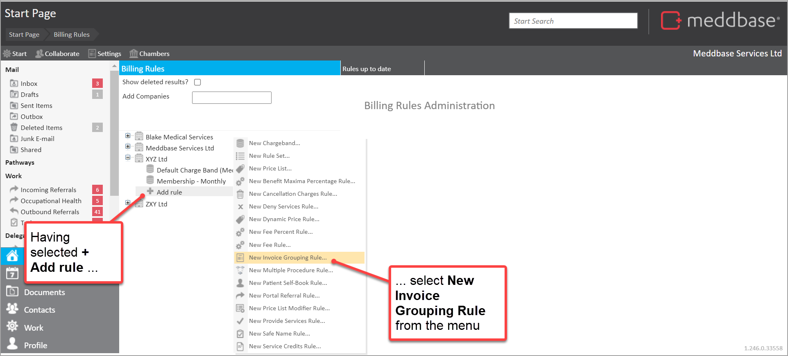
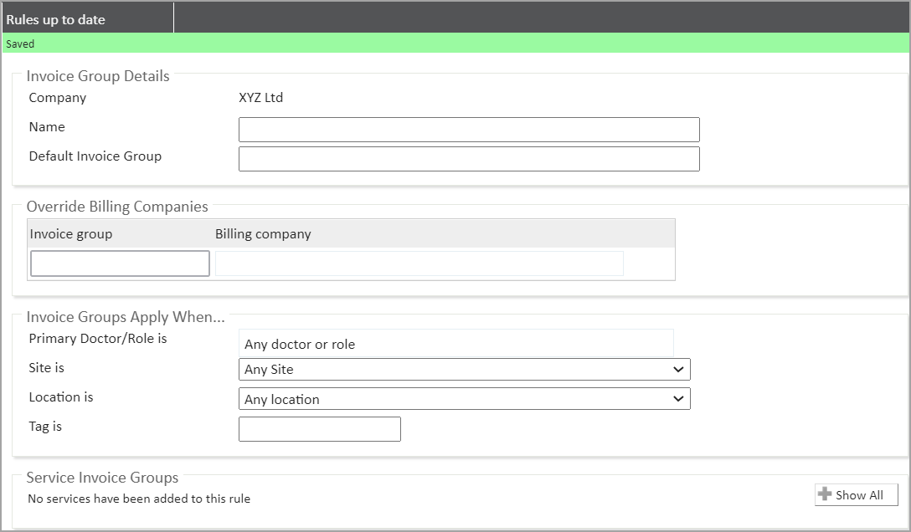
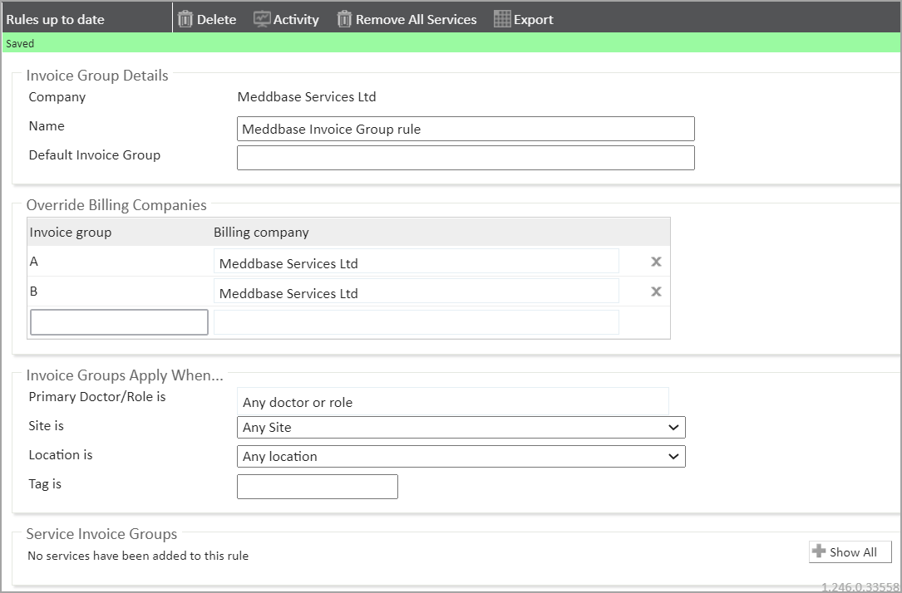
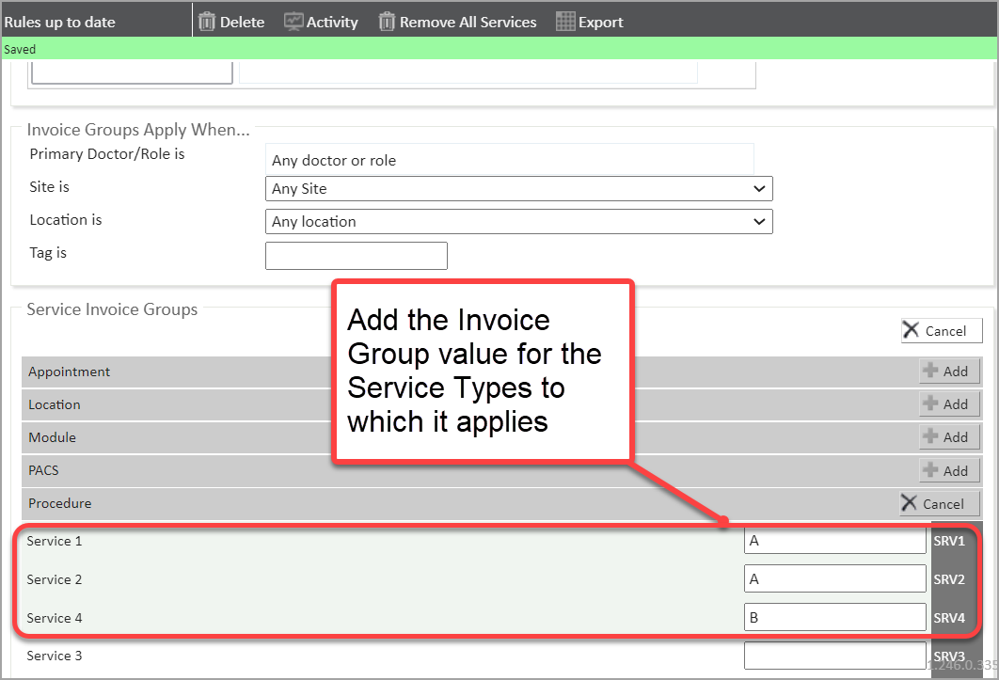
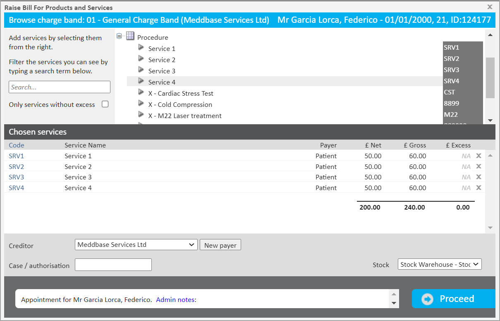
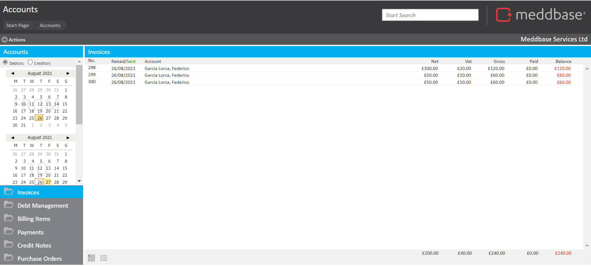
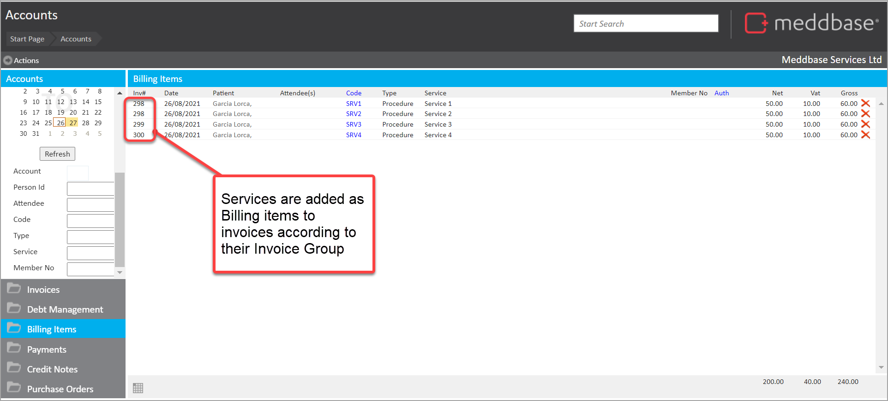
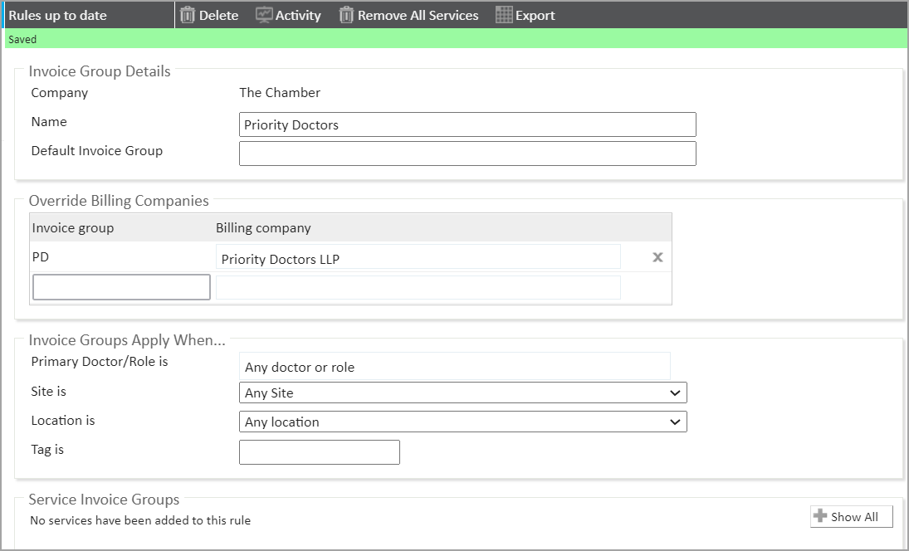
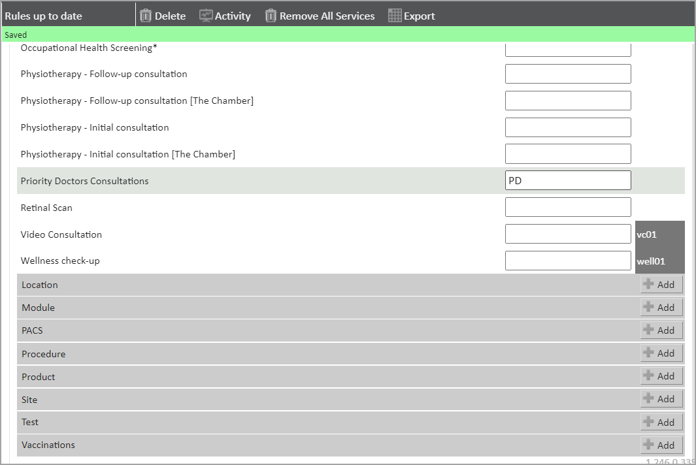

You can use the invoice grouping rule if you want:
The Invoice Grouping Rule will only apply to internal company types.
To help understand how you can work with the Invoice Grouping Rule this article explains:
To provides a couple of examples of setting up the configuration it also provides examples:
How to add an Invoice Grouping Rule
1. From the Start Page go to Admin.
2. From the Admin Page select Billing Rules.
3. Select the company to which the rule should be added.
4. Select + Add Rule.
5. Select > New Invoice Grouping Rule from the menu.

The Invoice Grouping rule panel is displayed.

6. Add field values to the different sections (using field and sections explanation and examples below for guidance).
The Invoicing grouping rule should be saved automatically.
7. When set up, add the Invoicing Group rule to charge bands as needed.
Below is an explanation of the fields and sections shown in the Invoice Grouping rule screen.
| Section / Field | Explanation |
| Invoice Group Details | |
| Name | Set the name of the rule |
| Default Invoice Group | The name of the invoice groups all services belong to unless overridden |
| Override Billing Companies | |
| Invoice Group | Code for invoice group |
| Billing Company | Select the company to be invoiced |
| Invoice Groups Apply When... | |
| Primary Doctor is | Rule only applies if a specific doctor is attending |
| Site is | Rule only applies if the appointment is at a specific site |
| Location is | Rules only applies if the appointment is in a specific location |
| Tag is | Rule only applies if the ‘Billing Tag’ for a session is equal to the text field |
| Services Invoice Groups | The groups to which specific services are applied |
Invoice grouping allows you to split billing items to separate invoices. A billing item with a particular group will only be added to an ‘open’ invoice with that group code assigned to it. If no such invoice exists a new one will be created.
In this example, we have four services in our clinic and we want to group them into two Invoice Groups, A & B:
To set this up you can go through the following steps:
1. Add a New Invoice Group Rule (as shown above).
2. Name the Invoice Group.
3. In the section Override Billing Companies.

4. Go to the Service Invoice Groups.

5. When set up, add the Invoicing Group rule to charge bands as needed.
When set up has been completed and invoices are raised for those services then the services are added to 3 separate invoices according to the Invoice groups.

This can be seen in a display of Invoices and also illustrated in a presentation of Billing Items which reference the related Invoice number for the service.


In the example below, we have a company called Priority Doctors LLP that acts as the creditor for an appointment type called Priority Doctors Consultations.
To make sure that the invoice for that appointment is raised by Priority Doctors LLP, we set up an invoice grouping rule that works as follows:
1. Create a new Invoice Group Rule (as shown above).
2. Within the Invoice Group Details section.
3. Within the Override Billing Company section.

4. Scroll to the Service Invoice Groups section.

5. When set up, add the Invoicing Group rule to charge bands as needed.
When we book a Priority Doctors Consultation for a patient on this charge band, the invoice will then be raised by Priority Doctors LLP rather than the default chamber company.
If multiple invoice groups are required, you can enter a ‘Default Invoice Group’ in the section at the top. This will default all invoices to be created by that company unless overridden.